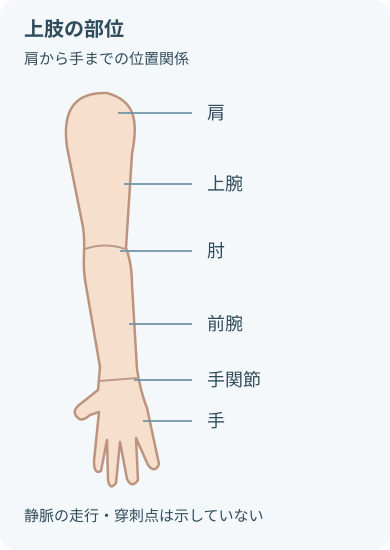

注意事項
穿刺前
- 穿刺前の照合
- 指示
- 患者
- 薬剤・輸液
- 投与経路
- 穿刺前の確認
- アレルギー
- 皮膚状態
- 既往のトラブル
- 避ける部位の状態
- 感染
- 創傷
- 熱傷
- 血腫
- 浮腫
これらがある部位は避ける。
- 透析用シャント側は避ける
- 乳房手術・リンパ節郭清後の上肢は、患者の状態と院内方針に沿って判断
- 成人では上肢を選択。
- 関節部は可能な限り避ける。
穿刺中・穿刺後
- 直ちに中止する症状
- 電撃痛
- 強い疼痛
- しびれ
これらがあれば直ちに中止する。
- 使用しない徴候
- 腫脹
- 蒼白
- 漏れ
- 注入抵抗
これらがあれば使用しない。
- 一度抜いた内針をカテーテル内へ戻さない
- 再穿刺には新しい留置針を使用
- 内針は抜去直後に耐貫通性容器へ廃棄
- 不要になった末梢静脈カテーテルは速やかに抜去
目的
- 輸液・静脈注射の投与経路を確保
- 間欠投与・持続投与に用いる静脈路を維持
- 緊急時に使用できる投与経路を確保
観察項目
- 穿刺部の観察
- 疼痛
- 圧痛
- 発赤
- 熱感
- 腫脹
- 硬結
- 静脈に沿った発赤・索状硬結
- 液体の漏れ
- 出血
- 浸出液
- 薬液の漏れ
- 投与中の観察
- 滴下・注入速度
- 注入抵抗
- ポンプアラーム
- 固定・カテーテル
- 固定の緩み
- カテーテルの屈曲
- カテーテルの逸脱
- 接続部
- 接続部の緩み
- 接続部の外れ
- 血液逆流
- 全身症状
- 発熱
- 悪寒
- 発疹
- 呼吸苦
- 留置継続の必要性
必要物品
- 末梢静脈留置針
- 駆血帯
- 皮膚消毒薬
- 清潔手袋
- 生理食塩液入りシリンジ
- 延長チューブ
- ニードルレスコネクタ
- 滅菌透明ドレッシング材
- 滅菌ガーゼ
- 固定用テープまたは固定器具
- 処置用シーツまたはタオル
- ラベル
- 耐貫通性廃棄容器
- 廃棄物容器
- 指示と院内手順に沿って準備
- 生理食塩液
- 延長チューブ
- コネクタ
- 投与する薬剤・輸液がある場合は別に照合する。
手順

- 成人では上肢を選択し、関節部は可能な限り避ける。
- 図は静脈の走行や穿刺点を示すものではない。
実際の部位を選ぶときの評価
- 血管の状態
- 皮膚の状態
- 投与内容
- 固定のしやすさ
-
指示と患者を確認指示の確認
- 目的
- 予定する薬剤・輸液
- 投与期間
患者へ説明し、同意を得る。
-
接続器具を準備
- 延長チューブとコネクタを接続する。
- 生理食塩液でプライミングし、空気を除く。
-
穿刺部位を選択
- 上肢の末梢側から検討する。
- まっすぐで触れやすく、固定しやすい静脈を選ぶ。
-
駆血して静脈を確認視診・触診で確認
- 走行
- 弾力
- 深さ
肢位を整えて駆血し、静脈を確認する。
-
手指衛生・消毒
- 手指衛生後に手袋を装着する。
- 穿刺部位を消毒し、規定時間乾燥させる。
- 消毒後は触れない。
-
穿刺
- 皮膚を固定して穿刺する。
- 逆血を確認後、角度を浅くして製品手順に沿ってわずかに進める。
-
カテーテルを進める
- 内針ではなくカテーテルのみを静脈内へ進める。
- 抵抗や疼痛があれば無理に進めない。
-
駆血を解除・内針を廃棄
- 駆血を解除する。
- カテーテルを安定させ、内針を抜去する。
- 直ちに耐貫通性容器へ廃棄する。
-
接続
- プライミング済みの延長チューブを無菌的に接続する。
- 接続部を確実に締める。
-
開通性を確認
- 院内手順に沿って生理食塩液を緩徐に注入。
- 開通性確認時の観察
- 疼痛
- 腫脹
- 漏れ
- 抵抗
これらがないか確認する。
- 抵抗時は押し込まない。
-
固定
- 穿刺部を観察できるように滅菌ドレッシング材で固定。
- 延長チューブは屈曲・牽引が生じない位置に固定する。
-
記録記録する項目
- 穿刺部位
- 留置針の規格
- 穿刺回数
- 日時
- 固定状態
- 患者の反応
穿刺からカテーテルを進めるまで
- 留置針の構造と操作は製品で異なる。
- 電子添文と院内手順を優先する。
関連知識
留置針の選択
- 必要な治療を行える範囲で、細く短いカテーテルを検討。
- 留置針を選ぶ要素
- 血管径
- 投与内容
- 必要流量
- 留置期間
これらを合わせて選ぶ。
- 24G
-
- 細い血管・脆弱な血管で検討
- 流量制限と投与内容を確認
- 22G
-
- 一般的な輸液・薬剤投与で検討
- 必要流量と血管径を確認
- より太い規格
-
- 急速輸液・輸血などで検討
- 太い規格を選ぶ際の確認
- 目的
- 血管径
- 製品性能
規格の確認
- 包装表示
- ゲージ
- 長さ
- 流量
- 色だけで規格を判断しない。
- 色調は識別の補助にする。
主な合併症
- 浸潤
非壊死性の輸液が血管外へ漏出する。
徴候- 腫脹
- 冷感
- 蒼白
- 疼痛
- 滴下不良
- 血管外漏出
- 起壊死性・刺激性薬剤が血管外へ漏出する。
- 直ちに投与を中止し、薬剤別の手順で対応する。
- 静脈炎
- 徴候
- 疼痛
- 発赤
- 熱感
- 腫脹
- 静脈に沿う索状硬結
徴候があれば抜去を検討する。
- 感染
- 徴候
- 発赤
- 排膿
- 圧痛
- 発熱
- 悪寒
局所・全身所見を合わせて評価する。
- 閉塞
- 徴候
- 滴下不良
- 注入抵抗
- ポンプアラーム
無理にフラッシュしない。
- 血腫・出血
- 徴候
- 腫脹
- 皮下出血
- 持続出血
抜去時は確実に圧迫止血する。
- 神経損傷
- 症状
- 電撃痛
- 強い疼痛
- しびれ
- 知覚・運動の異常
症状があれば直ちに中止する。
- カテーテル損傷
- 原因となる操作・動き
- 関節運動
- 過度な屈曲
- 内針の再挿入
- 内針を再挿入しない。
- 抜去時は全長を確認する。
留置中の管理
- 使用前と定期的に穿刺部を視診・触診
- 患者に伝えてもらう症状
- 疼痛
- 熱感
- 違和感
これらがあれば伝えるよう説明する。
- ドレッシング材を交換する状態
- 湿潤
- 汚染
- 剝離
これらがあれば交換する。
- 抜去が必要な状態
- 静脈炎
- 感染
- 機能不良
これらがあれば抜去する。
- 交換時期は最新ガイドラインと院内方針に従う
- 継続の必要性を毎日見直す
出典
- NCI SEER Training「Muscles of the Upper Extremity」
- WHO, Guidelines for the prevention of bloodstream infections and other infections associated with the use of intravascular catheters. Part I
- CDC, Strategies for Prevention of Catheter-Related Infections
- PMDA「スーパーキャス」電子化された添付文書
- PMDA「医療事故情報収集等事業 第78回報告書」医療安全情報